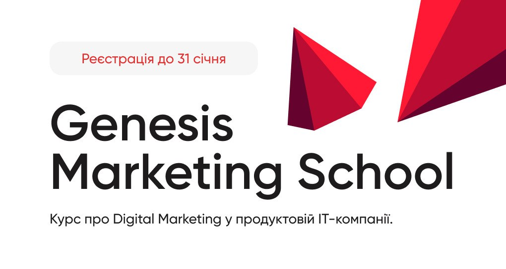
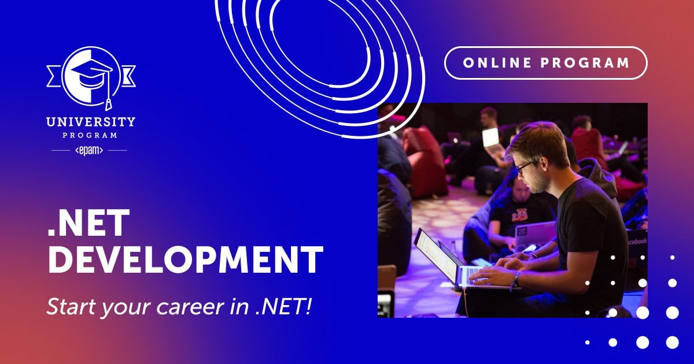

АКТУАЛЬНІ НОВИНИ
Увага!!! ШАХРАЇ!

Увага, не переходьте за посиланням.
Не вводьте пароль.
Беруть під контроль телеграм акаунти.
2-х факторна авторизація не допоможе.
У випадку, якщо "попались", негайно змініть пароль, вийдіть з усіх активних сеансів та веб-сайтів.
Genesis Marketing School – курс про digital-маркетинг у продуктовій IT-компанії.
Genesis Marketing School – курс про digital-маркетинг у продуктовій IT-компанії.
📕 Програма складається з таких блоків:
база про продуктове ІT для маркетолога;
креативний маркетинг: робота з performance-креативами, UGC та креаторами;
user acquisition: залучення користувачів на web та app;
аналітика: воронки, основні метрики, автоматизація;
маркетинг і продукт: точки перетину та взаємодія команд.
💻 Під час навчання на тебе чекають:
домашні завдання;
робота над фінальним проєктом;
нетворкінг із учасниками школи та організаторами;
можливість працевлаштування.
▶️ Умови участі: безоплатно. Для того, щоб долучитися потрібно пройти відбір.
Посилання на реєстрацію
Набір на програму .NET development
⚡️ Набір на програму .NET development продовжено до 7 січня!
Це безкоштовний онлайн-курс, після успішного закінчення якого у тебе буде нагода приєднатися до нашої .NET лабораторії, щоб продовжити навчання, а можливо і співпрацю з EPAM.
Особливості цієї навчальної програми:
👉 Різноманітний вміст: курс складається з теоретичних матеріалів для самостійного вивчення, практичних завдань і тестів з миттєвим автоматизованим зворотним зв'язком.
👉 Підтримка менторів: ми будемо координувати твоє навчання через регулярні Q&A сесії, де ти зможеш отримати відповіді на всі свої запитання.
👉 Актуальність: ми допоможемо тобі опанувати нові технології та найкращі підходи. Ти отримаєш прикладні та практичні знання, які відповідають вимогам до сучасних розробників на .NET.
Цікаво? Тоді годі зволікати!⌛️Набір триває до 7️⃣ січня (18:00), тож реєструйся, проходь відбіркові етапи та починай навчання 15 січня.
🔗 Деталі та реєстрація